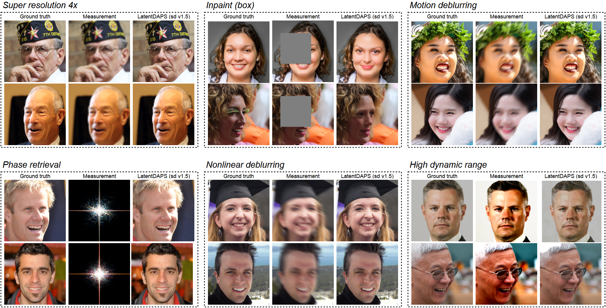

We compare DAPS with DPS on a nonlinear inverse problem with a 2D Gaussian mixture prior. DAPS is able to sample more accurately from the posterior distribution.
We evaluate DAPS with a series of inverse problems in image domain, including five linear inverse problems: (1) super-resolution, (2) Gaussian deblurring, (3) motion deblurring,
(4) inpainting with a box mask, (5) inpainting on random pixels, and three nonlinear inverse problems: (1) phase retrieval, (2) nonlinear deblurring, (3) high dynamic range reconstruction.
DAPS outperforms existing baselines in terms of perceptual quality (LPIPS) and peak signal-to-noise ratio (PSNR).
DAPS can also be applied to large-scale text-conditioned latent diffusion models, e.g., Stable Diffusion.

Sampling results of LatentDAPS (SD v1.5) on FFHQ 256x256 images. The images are sampled with a guidance scale of 7.5 and a text prompt "a natural looking human face."
We apply DAPS to solve the compressed sensing multi-coil magnetic resonance imaging problem (CS-MRI).
DAPS is able to generate diverse samples given less information. For example, we show several generated samples for (1) inpainting with large boxes and (2) 16x super-resolution.
We run DAPS with various configurations to test its performance under different computing budgets in terms of the number of
function evaluation (NFEs). DAPS is able to generate high-quality samples with a modest time cost.